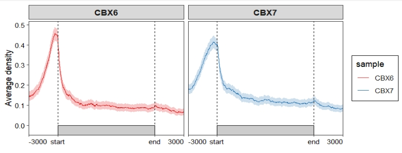
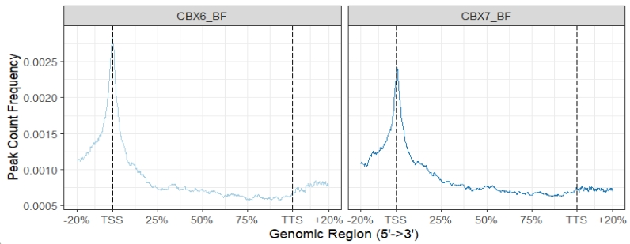

Chapter 3 Parse getTagMatrix
Function getTagMatrix is different from normalizeToMatrix which is used to use target genomic regions to do enrichment analysis around specific regions. While normalizeToMatrix is using binding signals on genome in bigwig files and do the enrichment analysis on specific regions.
3.1 Do enrichment analysis
library(ChIPseeker)
library(TxDb.Hsapiens.UCSC.hg19.knownGene)
txdb <- TxDb.Hsapiens.UCSC.hg19.knownGene
files <- getSampleFiles()
seek_list <- lapply(4:5, function(x){
peak <- readPeakFile(files[[x]])
## The results of binning method and normal method are nearly the same.
tagMatrix_binning <- getTagMatrix(peak = peak, TxDb = txdb,
upstream = 3000, downstream = 3000,
type = "body", by = "gene",
nbin = 800)
})
# >> binning method is used...2023-10-17 21:06:24
# >> preparing body regions by gene... 2023-10-17 21:06:24
# >> preparing tag matrix by binning... 2023-10-17 21:06:24
# ...
mat_df <- retriveData(mat.list = seek_list,
sample.names = c("CBX6","CBX7"),
ChIPseeker = T)3.2 Profile plot

We can use ChipSeeker to see the original plot:
plotPeakProf2(files[4:5],
upstream = rel(0.2), downstream = rel(0.2),
by = "gene", type = "body",
TxDb = txdb, facet = "column",
nbin = 800,free_y = FALSE)